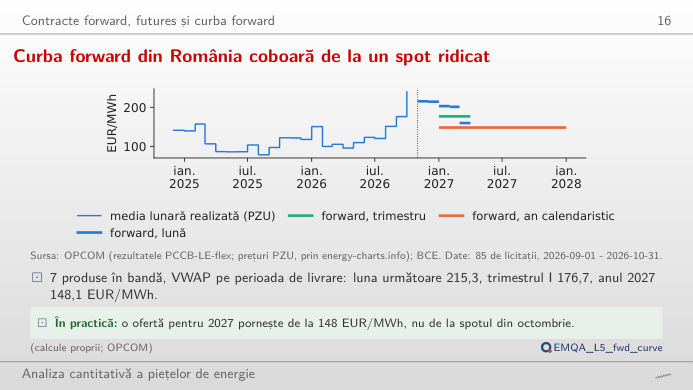
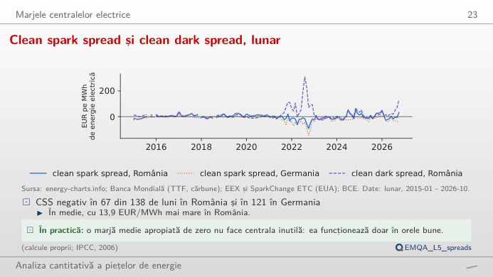
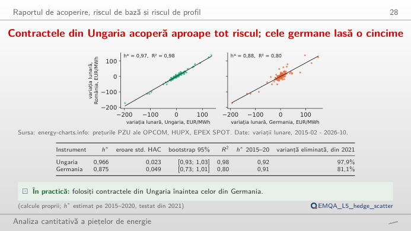
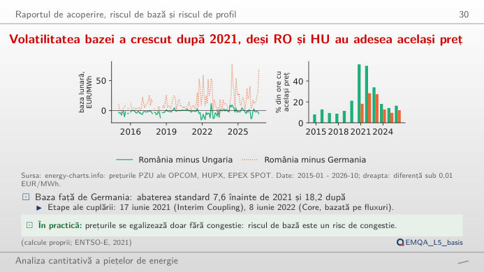
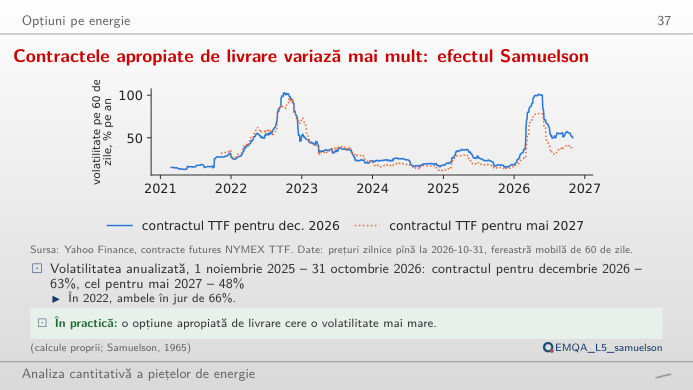
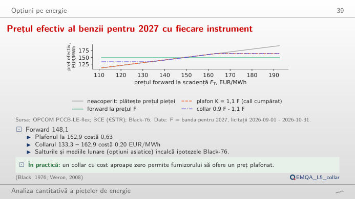

În stînga este slide-ul din curs, în dreapta aceeași figură, recalculată în browser din datele cursului (data/clean) cînd modificați un control. Butonul ▶ modifică parametrul principal pas cu pas. Sub fiecare figură: o sinteză numerică, o întrebare pentru sală și Quantlet-ul cu codul figurii.
Contracte forward, futures și curba forward · Spread-urile: marjele centralelor electrice · Raportul de acoperire, riscul de bază și riscul de profil · Opțiuni pe energie
Contracte forward, futures și curba forward
Curba forward din România coboară de la un spot ridicat

Răspuns
Nu întocmai. Prețul forward este prețul spot așteptat plus o primă de risc, iar o parte din diferență este sezonieră: noiembrie și decembrie 2026 s-au tranzacționat la 215,33 și 214,27 EUR/MWh, primul trimestru din 2027 la 176,69, iar anul întreg la 148,12, care include și vara ieftină, cu producție solară mare. Mutați cursorul înapoi: în 2022, curba cobora de la un spot de criză, iar produsul Cal-23 (anul calendaristic 2023) s-a tranzacționat pînă la 509,18 EUR/MWh, în timp ce în 2023 media PZU a fost 103,74 EUR/MWh.
Spread-urile: marjele centralelor electrice
Clean spark spread și clean dark spread, lunar

Răspuns
Numărul scade, deoarece un randament mai mare reduce atît costul combustibilului, cît și costul emisiilor pe MWh de energie electrică: clean spark spread = p − gaz/η − (0,202/η)·EUA. La 0,58, numărul scade de la 67 la 29 de luni. Spread-ul clean dark al cărbunelui nu se schimbă cu acest cursor: alegerea între gaz și cărbune depinde de costul relativ, nu doar de prețul energiei.
Raportul de acoperire, riscul de bază și riscul de profil
Contractele din Ungaria acoperă aproape tot riscul; cele germane lasă o cincime

Răspuns
Da: h* = 0,875, cu R² = 0,80, față de R² = 0,98 pentru Ungaria. Raportul de acoperire este h* = ρ·σ_RO/σ_F; România și Ungaria sînt cuplate și au adesea același preț, în timp ce Germania este mai departe în rețea, iar prețul ei se mișcă parțial din alte cauze (vînt, solar, propriile interconexiuni). Varianța rămasă după acoperire este 1 − R²: circa 2% cu Ungaria și circa o cincime cu Germania.
Volatilitatea bazei a crescut după 2021, deși RO și HU au adesea același preț

Răspuns
Mai volatilă: abaterea standard a bazei lunare RO–HU crește de la 2,82 EUR/MWh înainte de 2021 la 5,77 EUR/MWh din 2021, iar a bazei RO–DE de la 7,61 la 18,23 EUR/MWh. În același timp, România și Ungaria au încă exact același preț în multe ore (panoul din dreapta): o bază de obicei nulă, dar ocazional mare, este riscul tipic lăsat de o acoperire printr-o altă zonă.
Opțiuni pe energie
Contractele apropiate de livrare variază mai mult: efectul Samuelson

Răspuns
Acesta este efectul Samuelson: șocurile de cerere și ofertă (stocuri, vreme, transporturi de GNL, adică gaz natural lichefiat) afectează mai ales prețul pentru livrarea apropiată și se așteaptă să dispară înainte de o lună de livrare îndepărtată. Pe măsură ce scadența se apropie, prețul futures se comportă tot mai mult ca prețul spot, iar volatilitatea lui crește. În 2022, diferența a fost mică (66,1% față de 66,8%): într-o criză, chiar și lunile îndepărtate s-au mișcat cît contractul apropiat.
Prețul efectiv al benzii pentru 2027 cu fiecare instrument

Răspuns
Plafonul (un call cu strike 162,93) costă 0,63 EUR/MWh, adică circa 5.500 EUR pentru 1 MW pe un an; vînzarea unui put cu strike 133,31 (0,43 EUR/MWh) aduce costul collar-ului la 0,20 EUR/MWh. Cumpărătorul renunță la cîștigurile de sub prag în schimbul unui plafon mai ieftin. Ridicați σ la 50% (aproape de volatilitatea contractelor TTF apropiate): call-ul la bani crește la 10,33, iar collar-ul la 0,88 EUR/MWh, iar call-ul și put-ul la K = F rămîn egale, cum cere paritatea put–call (C − P = e−rT(F − K)).
Tranzacții forward: OPCOM (bursa de energie din România), PCCB-LE-flex și piețele forward asociate, produse de bandă, prețuri convertite în EUR/MWh la cursul EUR/RON al BCE (Banca Centrală Europeană). Prețuri pentru ziua următoare: OPCOM PZU, HUPX, EPEX, prin energy-charts.info. Gaze TTF (Title Transfer Facility): seria lunară a Băncii Mondiale și contracte futures individuale; certificate de emisii EUA (EU Allowance): licitațiile EEX; cărbune: Banca Mondială (Africa de Sud, Richards Bay); €STR (rata euro pe termen scurt): BCE. Mediile lunare doar pentru lunile complete. Date pînă la data-limită a cursului (31 octombrie 2026).